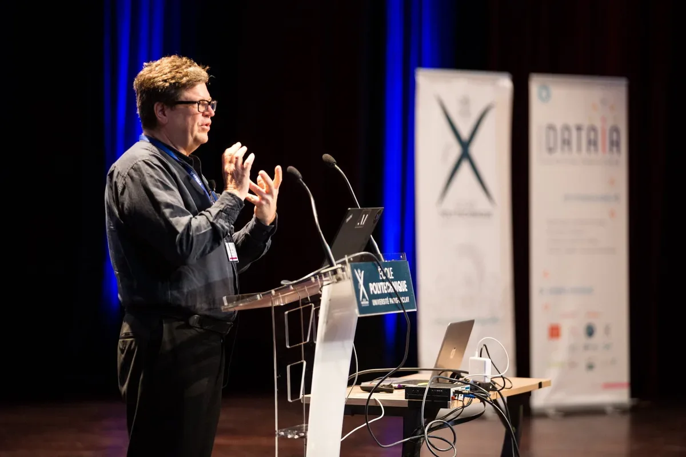
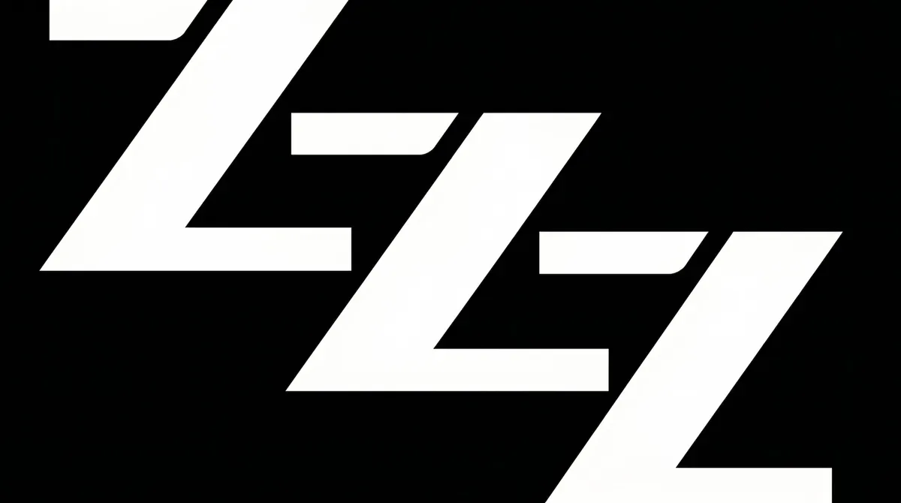
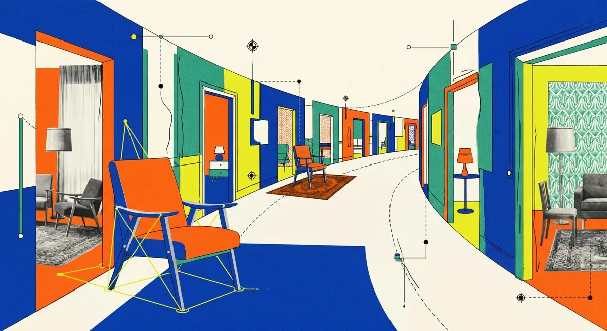

ИсследованияИндустрия
Янн ЛеКун предупреждает о «пузыре» в ИИ-индустрии и критикует xAI Маска
ЛеКун: ИИ-лаборатории живут на деньги инвесторов и рискуют лопнуть как пузырь
The Decoder
18 июн.Академические прорывы, технические разборы и новые работы в области ИИ — от ведущих лабораторий и университетов.
121 материалов

ЛеКун: ИИ-лаборатории живут на деньги инвесторов и рискуют лопнуть как пузырь

Соавтор трансформера и сооруководитель Gemini переходит из Google в OpenAI

ИИ-агенты сами обучают роботов вставлять GPU и резать стяжки — без участия человека
Козы вместо нейронов: зачем исследователь Microsoft сломал логику половины ИИ-науки

Запретить опасный ИИ не получится: почему эксперты считают точечные ограничения бесполезными

Открытая модель GLM-5.2 почти догнала Claude Opus 4.8 на многочасовых задачах кодирования
Amazon, Nvidia и AMD поставили $310 млн на стартап, который учит ИИ понимать физику мира

Как OpenAI учит предсказывать сбои ИИ до релиза — и почему стандартные тесты дают осечку

Роботы Nvidia учатся сами: ИИ-агенты пишут код, тестируют гипотезы и достигают 99% точности
Epoch ИИ: к середине 2026 года ИИ-расходы техгигантов превысят их денежный поток

Gemini берётся за британскую бюрократию: ИИ-прототип обещает вдвое ускорить выдачу разрешений на стройку

Разработчики Claude Agent SDK получили передышку: Anthropic заморозила токенную тарификацию после волны протестов

Два немецких суда вынесли противоположные решения по ИИ-поиску Google — кто прав?
Microsoft хочет сделать Copilot Cowork дешевле — за счёт DeepSeek V4 и оплаты по факту использования

OpenAI потратила на R&D $19 млрд при выручке $13 млрд — утечка раскрыла реальные цифры

SpaceX платит $60 млрд за ИИ-редактор кода Cursor — сделка закроется уже в третьем квартале

Пентагон заменяет 200 часов работы пятичасовым ИИ-черновиком — и никто не знает, кто проверяет точность

Grok — военная необходимость? Минюст США встал на защиту незаконных турбин xAI

SpaceX заплатила $60 млрд за Cursor — и признала, что xAI отстаёт от OpenAI и Anthropic в ИИ-кодинге

Один клик по ссылке — и Copilot сам отдавал почту и файлы атакующему. Как работала атака SearchLeak

DeepSeek взял деньги впервые — $7,4 млрд без права голоса для инвесторов

Anthropic остановила реформу биллинга в последний момент — IPO и ценовая война с OpenAI изменили расчёты

Какие ИИ-модели повторяют российские нарративы, а какие их отвергают — первый систематический тест

Nvidia занимает $25 млрд на долговом рынке — и это сигнал о новых рисках в ИИ-финансах

США против Anthropic: можно ли вообще создать LLM, которую нельзя взломать?

Как сканирование покестопов превратилось в технологию навигации военных беспилотников
Наделла боится не конкурентов — он боится, что корпоративные знания утекут к нескольким ИИ-гигантам

США отключили модели Anthropic для всего мира — Европа ищет ответ, но единого мнения нет
Google открыл стандарт OKF: Markdown-файлы вместо разрозненных вики, каталогов и комментариев в коде

Microsoft Research придумала, как видеогенератор запоминает комнату — без хранения ни одного пикселя